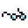
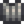
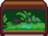

Broken Glasses
| Broken Glasses | |
|  | |
| It looks like someone lost their glasses. They're busted. | |
| Information | |
| Source | Fishing Pole • Crab Pot • Garbage Cans • Fish Pond • Cat |
| Season | |
| XP |
|
| Sell Price | |
Broken Glasses are a type of trash that can be caught when fishing during all seasons, in any location, using either a Fishing Pole or a Crab Pot. They can also be found in Garbage Cans, and any crab pot fish may produce Broken Glasses when placed in a Fish Pond. It can also be gifted by a pet cat with max friendship.
Broken Glasses can be recycled into Refined Quartz.
Gifting
| Villager Reactions
| |
|---|---|
| Like | |
| Hate | |
Recycling
| Item | Equipment | Product | Recycling Time |
|---|---|---|---|
Bundles
Broken Glasses are not used in any bundles.
Recipes
Broken Glasses are not used in any recipes.
Tailoring
Broken Glasses can be used in the spool of the Sewing Machine to create the Trash Can Shirt.  It can be used in dyeing, serving as a blue dye at the dye pots, located in Emily's and Haley's house, 2 Willow Lane.
Quests
During the special order quest Community Cleanup the player is tasked with gathering 20 trash items (except Joja Cola).
Trading
Once unlocked, the Raccoon's wife near Giant Stump will trade for Broken Glasses.
| Image | Name | Description | Price | Requirements |
|---|---|---|---|---|
|  | Jungle Tank | Can be placed inside your house. | 5th Request Completed |
History
- 1.4: Can now be used in Tailoring. Can be produced by Fish Ponds.
- 1.6: Now used to trade for Jungle Tank. Can now be gifted by a pet cat with max friendship.